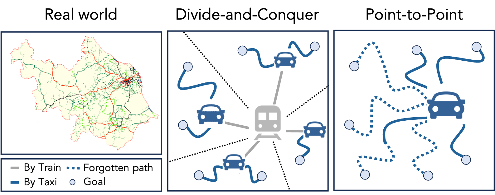
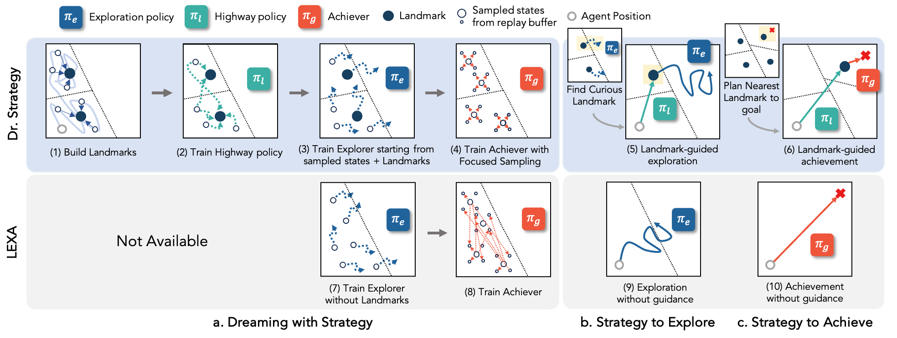
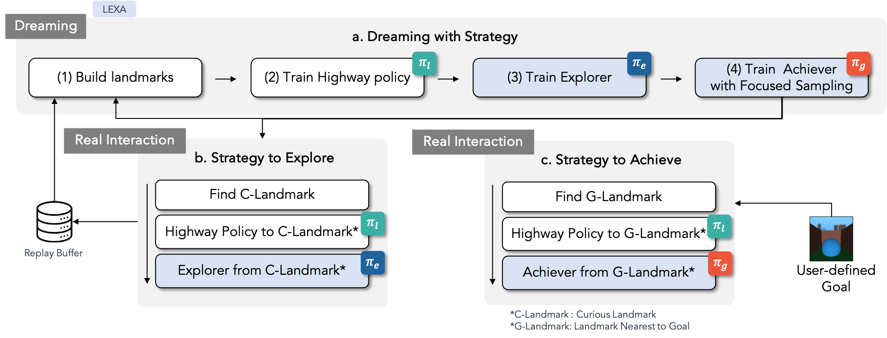
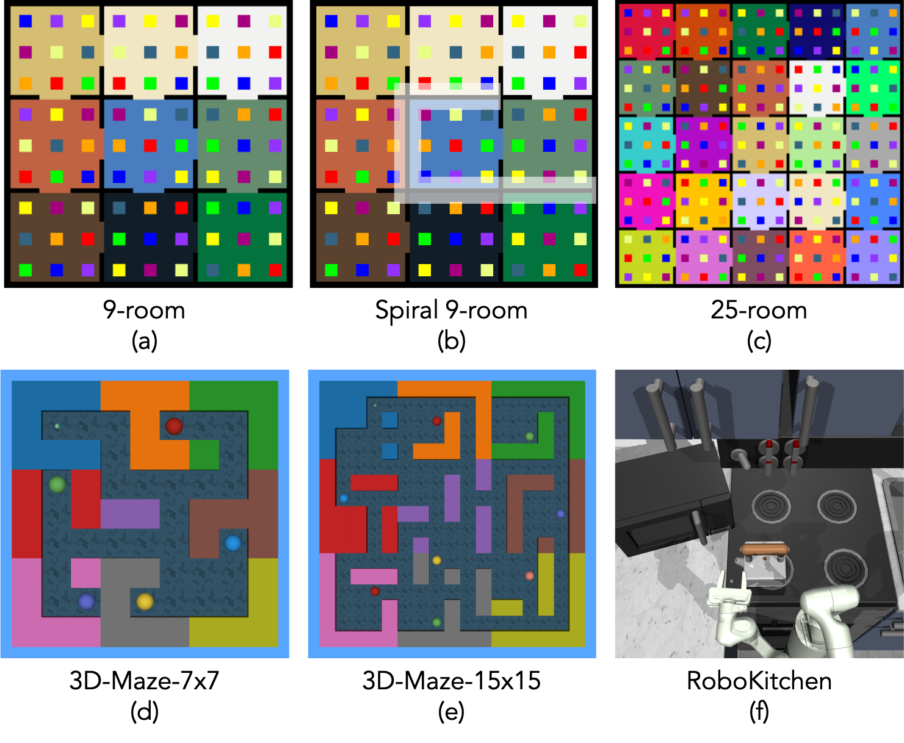
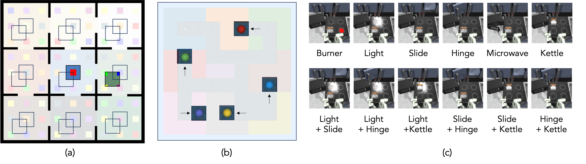
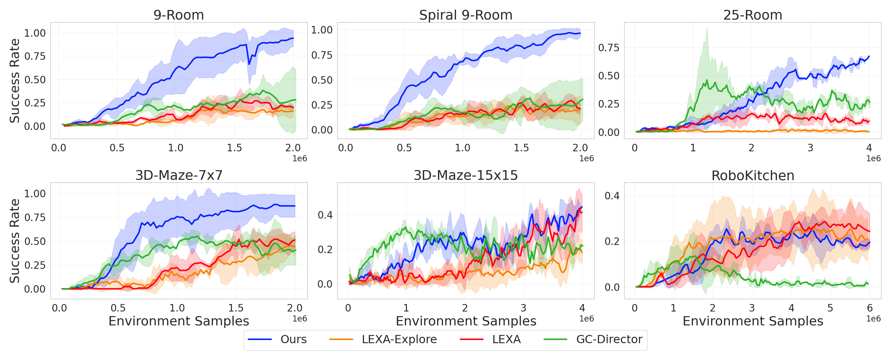
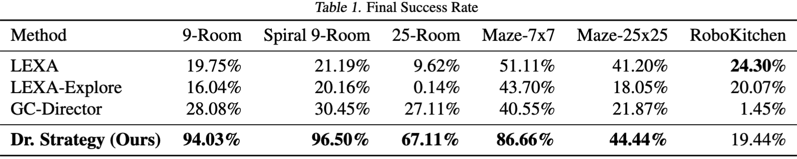
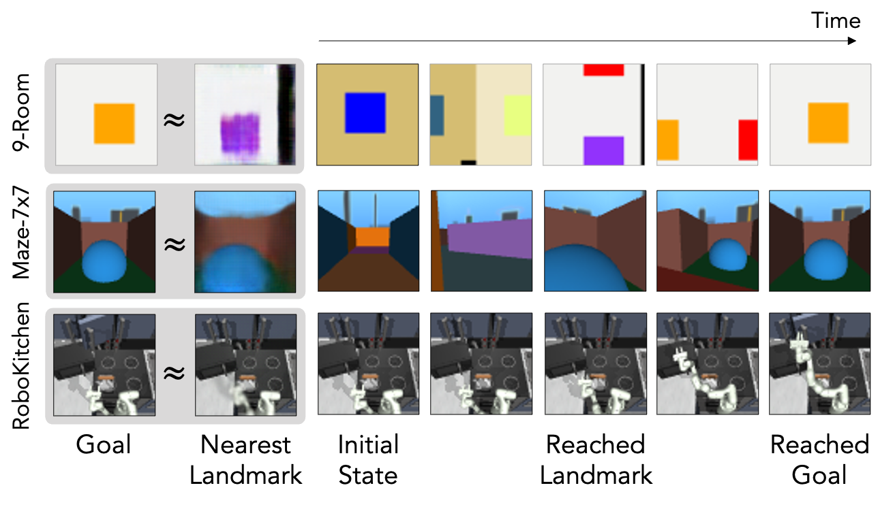
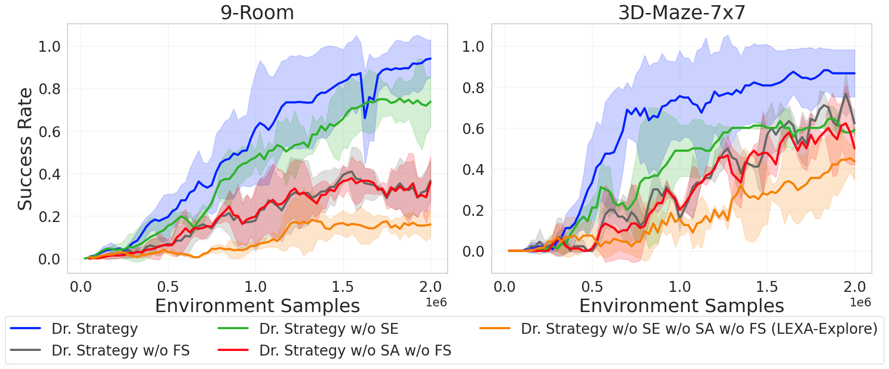

Model-based reinforcement learning (MBRL) has been a primary approach to ameliorating the sample efficiency issue as well as to make a generalist
agent. However, there has not been much effort toward enhancing the strategy of dreaming itself. Therefore, it is a question whether and how an agent can “dream better” in a more structured and strategic way. In this paper, inspired by the observation from cognitive science suggesting that humans use a spatial divide-and-conquer strategy in
planning, we propose a new MBRL agent, called Dr. Strategy, which is equipped with a novel
Dreaming Strategy. The proposed agent realizes a version of divide-and-conquer-like strategy in
dreaming. This is achieved by learning a set of latent landmarks and then utilizing these to learn
a landmark-conditioned highway policy. With the highway policy, the agent can first learn in the
dream to move to a landmark, and from there it tackles the exploration and achievement task in a
more focused way. In experiments, we show that the proposed model outperforms prior pixel-based
MBRL methods in various visually complex and partially observable navigation tasks.
Motivation
A crucial capability of generalist agents, such as humans, is to explore environments and acquire the abilities needed to achieve various goals, continuously and in an open-ended way. We raise the question of whether and how a model-based generalist RL agent can “dream better” in a more structured and strategic way.

Figure 1. (Left) In the real world, humans maintain a hierarchical
spatial structure for easy navigation. (Right) Trying to memorize
all the streets on the map can lead to an overwhelming amount
of information, making it difficult to retain the information effectively. (Middle) In contrast, choosing to travel by train to move
between cities and transfer to a taxi at the terminal minimizes the
complexity, allowing one to concentrate on local routes starting
from the terminal near the destination.
We propose a strategic model-based generalist agent, Dr. Strategy (short for “Dream Strategy”).
Our key idea is that a divide-and-conquer approach leveraging the structure of latent landmarks can enhance the efficiency of dreaming in MBRL and promote better exploration and achievement quality of a generalist agent.


Figure 2. Comparison between Dr. Strategy and LEXA. a. We construct latent landmarks and train Highway policy πl(at|st, l),
Explorer πe(at|st), and Achiever πg (at|st, eg ) in imagination. The Achiever is trained by Focused Sampling, which is conditioning
goals within a small number of steps instead of random sampling. All three policies are purely trained with imagined trajectories from
the world model. b. During exploration, we only evaluate the landmarks, and call the landmark with the highest exploration potential
“Curious Landmark" (C-Landmark). In a real environment, the Highway policy moves to the curious landmark, and the Explorer resumes
exploration. The agent iterates training and exploration with a certain frequency TF . c. During test time, we find the landmark that is
nearest to the given pixel-level goal (G-Landmark). The Highway policy reaches G-Landmark, and the Achiever proceeds to achieve the
goal immediately after. The blue boxes in the bottom half of the figure indicate the modules of LEXA, which are Explorer and Achiever
without focused sampling and landmarks.
Environments

Figure 3. Illustration of all the used environments. (a-c) Partially Observable 2D Navigation, (d-e) First-person view 3D maze navigation
and (f) RoboKitchen. (b) shows the spiral 9-rooms in which the closed gates are highlighted in white, (d-e) showing the 3D-Maze
environments without the floor color for easy visualizations of the walls.

Figure 4. Zero-shot evaluation goals on each environment. Our agent is evaluated given unseen goals in the evaluation phase. (a) and
(b) illustrate the goals in navigation environments and (c) shows the goal images of the RoboKitchen benchmark.
Main results


Figure 5. Zero-shot evaluation of the baselines across different environments. Each baseline is evaluated given a goal image from the
environment’s test set. Dr. Strategy significantly outperforms other baselines in most of the navigation tasks, while achieving comparable
results in RoboKitchen. The success rate is reported with the mean and standard deviation across 3 different random seeds.

Figure 6. Qualitative results of Dr. Strategy’s zero-shot evaluation trajectories. Given the goal, the proposed agent finds the nearest
landmark. We visualize it by inferring the latent state using the world model, and then it is reconstructed. The agent starts in the initial
state and then uses the highway policy conditioned on the closest landmark. Upon meeting the termination criteria, it then switches to the
focused achiever policy, conditioned on the given goal.
Ablation Studies

Figure 7. Ablation results for SE, SA, FS. showing the influence
of using Strategy to Explore (SE), Strategy to Achieve (SA), and
focused sampling (FS) to Dr. Strategy’s zero-shot success rate
BibTeX
@inproceedings{
hamed2024dr,
title={Dr. Strategy: Model-Based Generalist Agents with Strategic Dreaming},
author={Hany Hamed and Subin Kim and Dongyeong Kim and Jaesik Yoon and Sungjin Ahn},
booktitle={Forty-first International Conference on Machine Learning},
year={2024},
url={https://openreview.net/forum?id=HsseRq2FAx}
}